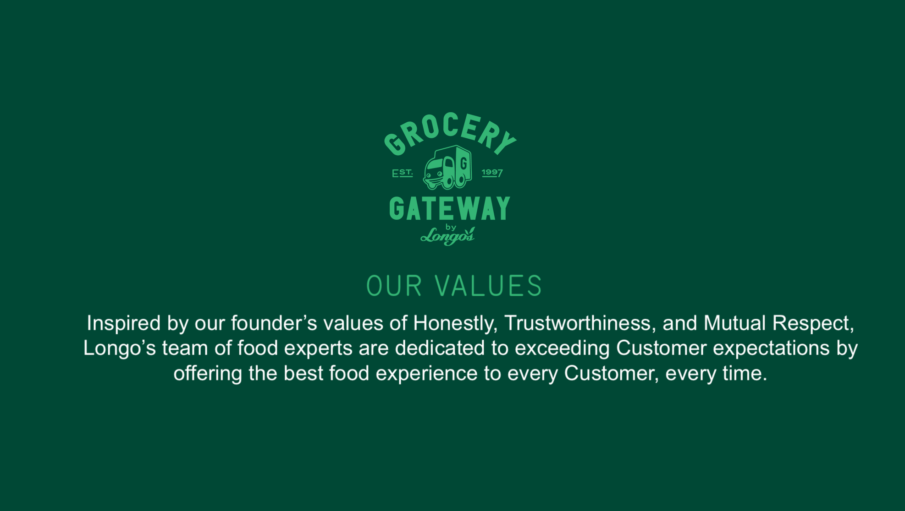
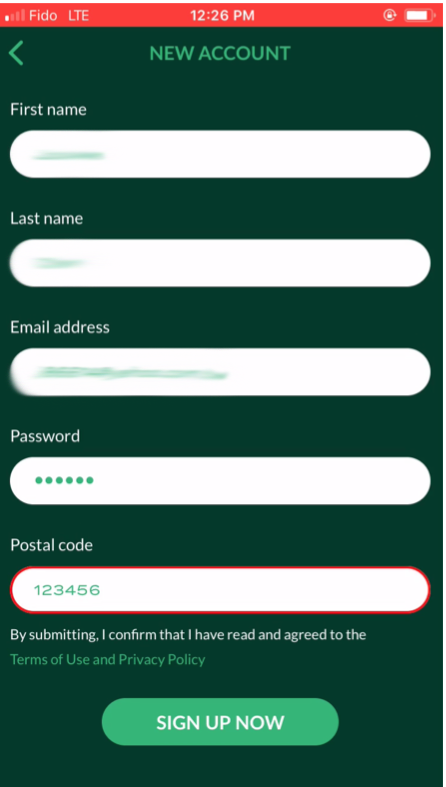

Onboarding
Outside the tech world, most people are familiar with the definition of the term “onboarding” with regards to new employees who join an organization. Similarly, the tech industry would define onboarding as the process of initially explaining a new product to first-time users, and “showing them the ropes” when it comes to the product’s functionality.-Elasticode.com
TEAM
Yixuan Wu, Chih-Ling Kuo
DATE
Oct 18, 2018
TASK
New user onboarding Grocery Gateway and successfully sign up to Gateway App.
SKILL
User testing
Task evaluation
Task flow Diagram
Wireframe of customer Journey Mapping

INTRODUCTION -GROCERY GATEWAY
Grocery Gateway is Canada’s largest online grocery delivery service.They provide personal shopper packs customers order with care and their delivery team brings consumers groceries right to their kitchen table.
We are here to analyze how is the onboarding experience of App to the new user.
CHALLENGE
New User
For new users, they are the first time to use the App.
New users try to onboard the App based on the relevant experience of another App or website. We don't know their previous experience will help them successfully sign up to Gateway App or not. They might face the issues that we never noticed.
Each user has different previous experience, and we don't really know.
PROCESS

Step1: Do self-testing
Before the Usability testing, the designer could do self-testing of the Grocery Gateway App. Understanding the process of onboarding before the user testing can help you conduct the user testing smoothly. If the participant doesn't know what the next step is, you will be available to help them.
Step2: Generate flow diagram
Flow Diagram
Flow Diagram is a flowchart of the task. It can help designer break down all the links between each decision that user makes. Flowcharts are used to describe both back-end processes and user task flows.
Generate the flow diagram have to remind yourself, you are not present the only one kind of user. There have multiple choices and functions; we have to understand several routes. There is not always "yes," also have to think about what if errors appear. Trying all the ways and will lead you to see the flow in a clear view.

Flow Diagram of Gateway New user Onboarding Experience

Task Evaluation Form
Step3: Conduct Usabilty testing
While doing the user testing, we have to assure the users it is okay for them to have any mistake. Don't make them feel nervous while doing testing. Let them keep in mind, and we are here to test the App, not their ability. Most important of all, please remember to record the screen and the audio for the further analysis. We are not the robot can remember each detail. If you have a team member can be the observer, she/he also can fill out the Task Evaluation while conducting the testing.
Step4: Fill out the task evaluation form
Task Evaluation form is a useful toolkit to help you list out each step that the user did, and analysis the issues. On this form, we have to fill out the steps, user independence, and time. After we fill out the evaluation form, the flow and the issues will appear obvious.
Step5: Make a wireflow of user task journey
Wireflow
Wireflow shows a sequence of several mobile-app wireframes for a typical user-task flow. Each wireframe corresponds to the same app page, rather than representing different app pages. -Page Laubheimer
After the usability testing, we screenshot each step the participant did and make these steps into a user task flow. Furthermore, we also label the action the user did. With the screenshots, the company can be more accessible to understand the flow of the onboarding experience. On the other hand, it also offers the designer to know which process or interface design can be improved.

Wire flow of user task Journey
RESULT
“How was the new user onboarding experience?”
In this usability testing, overall, our participant had smooth progress.
However, in the beginning, our participant had a little struggle in finding the sign-up button to create an account. The sign-up button is too small with no apparent position. It might cause new users to have unwell impression before they start to use it.

"Sign up now" is too small
"Sign up now" is too small
Whereas this App still has a good design — error prevent function. When our user enters the invalid postal code, the system will not allow her to complete the sign-up process. Moreover, when the user input the invalid information, the system output the frame as red to notify users which information are not correct.

Erro preveting fuction
Erro preveting fuction
Our recommendation is to present "Sign Up now" with the form of button.
The the original design of Sign up is a form of text. Nevertheless, the background colour is similar to the Text colour. So, if "Sign up now" can be made like a button will be much easier for the user to see it.
Lesson Learned
Photo by Helloquence on Unsplash